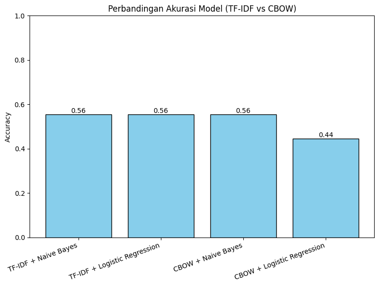

Klasifikasi Berita TF-IDF dan CBOW#
!pip install nltk
Requirement already satisfied: nltk in /usr/local/python/3.12.1/lib/python3.12/site-packages (3.9.2)
Requirement already satisfied: click in /usr/local/python/3.12.1/lib/python3.12/site-packages (from nltk) (8.2.1)
Requirement already satisfied: joblib in /home/codespace/.local/lib/python3.12/site-packages (from nltk) (1.5.1)
Requirement already satisfied: regex>=2021.8.3 in /usr/local/python/3.12.1/lib/python3.12/site-packages (from nltk) (2025.9.18)
Requirement already satisfied: tqdm in /usr/local/python/3.12.1/lib/python3.12/site-packages (from nltk) (4.67.1)
[notice] A new release of pip is available: 25.1.1 -> 25.2
[notice] To update, run: python3 -m pip install --upgrade pip
import pandas as pd
import re
import nltk
nltk.download("stopwords")
from nltk.corpus import stopwords
stop_words = stopwords.words("indonesian")
# Load dataset
df = pd.read_csv("berita_antaranews.csv")
print("Jumlah data:", len(df))
print(df.head())
#Preprocessing
def clean_text(text):
text = text.lower()
text = re.sub(r"[^a-zA-Z\s]", "", text)
text = " ".join([w for w in text.split() if w not in stop_words])
return text
df["clean_berita"] = df["isi_berita"].astype(str).apply(clean_text)
print("\nContoh hasil preprocessing:")
print(df[["isi_berita", "clean_berita"]].head())
[nltk_data] Downloading package stopwords to
[nltk_data] /home/codespace/nltk_data...
[nltk_data] Package stopwords is already up-to-date!
---------------------------------------------------------------------------
FileNotFoundError Traceback (most recent call last)
Cell In[2], line 10
7 stop_words = stopwords.words("indonesian")
9 # Load dataset
---> 10 df = pd.read_csv("berita_antaranews.csv")
12 print("Jumlah data:", len(df))
13 print(df.head())
File ~/.local/lib/python3.12/site-packages/pandas/io/parsers/readers.py:1026, in read_csv(filepath_or_buffer, sep, delimiter, header, names, index_col, usecols, dtype, engine, converters, true_values, false_values, skipinitialspace, skiprows, skipfooter, nrows, na_values, keep_default_na, na_filter, verbose, skip_blank_lines, parse_dates, infer_datetime_format, keep_date_col, date_parser, date_format, dayfirst, cache_dates, iterator, chunksize, compression, thousands, decimal, lineterminator, quotechar, quoting, doublequote, escapechar, comment, encoding, encoding_errors, dialect, on_bad_lines, delim_whitespace, low_memory, memory_map, float_precision, storage_options, dtype_backend)
1013 kwds_defaults = _refine_defaults_read(
1014 dialect,
1015 delimiter,
(...) 1022 dtype_backend=dtype_backend,
1023 )
1024 kwds.update(kwds_defaults)
-> 1026 return _read(filepath_or_buffer, kwds)
File ~/.local/lib/python3.12/site-packages/pandas/io/parsers/readers.py:620, in _read(filepath_or_buffer, kwds)
617 _validate_names(kwds.get("names", None))
619 # Create the parser.
--> 620 parser = TextFileReader(filepath_or_buffer, **kwds)
622 if chunksize or iterator:
623 return parser
File ~/.local/lib/python3.12/site-packages/pandas/io/parsers/readers.py:1620, in TextFileReader.__init__(self, f, engine, **kwds)
1617 self.options["has_index_names"] = kwds["has_index_names"]
1619 self.handles: IOHandles | None = None
-> 1620 self._engine = self._make_engine(f, self.engine)
File ~/.local/lib/python3.12/site-packages/pandas/io/parsers/readers.py:1880, in TextFileReader._make_engine(self, f, engine)
1878 if "b" not in mode:
1879 mode += "b"
-> 1880 self.handles = get_handle(
1881 f,
1882 mode,
1883 encoding=self.options.get("encoding", None),
1884 compression=self.options.get("compression", None),
1885 memory_map=self.options.get("memory_map", False),
1886 is_text=is_text,
1887 errors=self.options.get("encoding_errors", "strict"),
1888 storage_options=self.options.get("storage_options", None),
1889 )
1890 assert self.handles is not None
1891 f = self.handles.handle
File ~/.local/lib/python3.12/site-packages/pandas/io/common.py:873, in get_handle(path_or_buf, mode, encoding, compression, memory_map, is_text, errors, storage_options)
868 elif isinstance(handle, str):
869 # Check whether the filename is to be opened in binary mode.
870 # Binary mode does not support 'encoding' and 'newline'.
871 if ioargs.encoding and "b" not in ioargs.mode:
872 # Encoding
--> 873 handle = open(
874 handle,
875 ioargs.mode,
876 encoding=ioargs.encoding,
877 errors=errors,
878 newline="",
879 )
880 else:
881 # Binary mode
882 handle = open(handle, ioargs.mode)
FileNotFoundError: [Errno 2] No such file or directory: 'berita_antaranews.csv'
# =========================
# TF-IDF + Naive Bayes
# Dengan filter kelas kecil
# =========================
import pandas as pd
from sklearn.model_selection import train_test_split
from sklearn.feature_extraction.text import TfidfVectorizer
from sklearn.naive_bayes import MultinomialNB
from sklearn.linear_model import LogisticRegression
from sklearn.metrics import accuracy_score, confusion_matrix, classification_report
df_filtered = df.groupby('kategori_berita').filter(lambda x: len(x) > 1)
print("Distribusi label setelah filter:")
print(df_filtered['kategori_berita'].value_counts())
from sklearn.preprocessing import LabelEncoder
le = LabelEncoder()
y_encoded = le.fit_transform(df_filtered['kategori_berita'])
X_train_tfidf, X_test_tfidf, y_train_tfidf, y_test_tfidf = train_test_split(
df_filtered['isi_berita'],
y_encoded,
test_size=0.2,
random_state=42,
stratify=y_encoded
)
tfidf = TfidfVectorizer(max_features=5000, ngram_range=(1,2))
X_train_tfidf = tfidf.fit_transform(X_train_tfidf)
X_test_tfidf = tfidf.transform(X_test_tfidf)
nb_model = MultinomialNB()
nb_model.fit(X_train_tfidf, y_train_tfidf)
y_pred_nb_tfidf = nb_model.predict(X_test_tfidf)
acc_nb_tfidf = accuracy_score(y_test_tfidf, y_pred_nb_tfidf)
print("\n=== Evaluasi Naive Bayes ===")
print("Accuracy:", acc_nb_tfidf)
print("Confusion Matrix:\n", confusion_matrix(y_test_tfidf, y_pred_nb_tfidf))
print("Classification Report:\n", classification_report(y_test_tfidf, y_pred_nb_tfidf))
Distribusi label setelah filter:
kategori_berita
Humaniora 17
Hukum 9
Tekno 4
Rilis Pers 3
Politik 2
Foto 2
Internasional 2
Bisnis 2
Lintas Kota 2
Name: count, dtype: int64
=== Evaluasi Naive Bayes ===
Accuracy: 0.5555555555555556
Confusion Matrix:
[[1 1 0 0 0]
[0 4 0 0 0]
[0 1 0 0 0]
[0 1 0 0 0]
[0 1 0 0 0]]
Classification Report:
precision recall f1-score support
2 1.00 0.50 0.67 2
3 0.50 1.00 0.67 4
5 0.00 0.00 0.00 1
7 0.00 0.00 0.00 1
8 0.00 0.00 0.00 1
accuracy 0.56 9
macro avg 0.30 0.30 0.27 9
weighted avg 0.44 0.56 0.44 9
C:\Users\Syafiq Azizi\AppData\Roaming\Python\Python312\site-packages\sklearn\metrics\_classification.py:1509: UndefinedMetricWarning: Precision is ill-defined and being set to 0.0 in labels with no predicted samples. Use `zero_division` parameter to control this behavior.
_warn_prf(average, modifier, f"{metric.capitalize()} is", len(result))
C:\Users\Syafiq Azizi\AppData\Roaming\Python\Python312\site-packages\sklearn\metrics\_classification.py:1509: UndefinedMetricWarning: Precision is ill-defined and being set to 0.0 in labels with no predicted samples. Use `zero_division` parameter to control this behavior.
_warn_prf(average, modifier, f"{metric.capitalize()} is", len(result))
C:\Users\Syafiq Azizi\AppData\Roaming\Python\Python312\site-packages\sklearn\metrics\_classification.py:1509: UndefinedMetricWarning: Precision is ill-defined and being set to 0.0 in labels with no predicted samples. Use `zero_division` parameter to control this behavior.
_warn_prf(average, modifier, f"{metric.capitalize()} is", len(result))
import pandas as pd
from sklearn.model_selection import train_test_split
from sklearn.feature_extraction.text import TfidfVectorizer
from sklearn.linear_model import LogisticRegression
from sklearn.metrics import accuracy_score, confusion_matrix, classification_report
df_filtered = df.groupby('kategori_berita').filter(lambda x: len(x) > 1)
print("Distribusi label setelah filter:")
print(df_filtered['kategori_berita'].value_counts())
from sklearn.preprocessing import LabelEncoder
le = LabelEncoder()
y_encoded = le.fit_transform(df_filtered['kategori_berita'])
X_train__tfidf, X_test_tfidf, y_train, y_test_tfidf = train_test_split(
df_filtered['isi_berita'],
y_encoded,
test_size=0.2,
random_state=42,
stratify=y_encoded
)
tfidf = TfidfVectorizer(max_features=5000, ngram_range=(1,2))
X_train__tfidf_tfidf = tfidf.fit_transform(X_train__tfidf)
X_test_tfidf = tfidf.transform(X_test_tfidf)
lr_model = LogisticRegression(max_iter=1000)
lr_model.fit(X_train__tfidf_tfidf, y_train_tfidf)
y_pred_lr_tfidf = lr_model.predict(X_test_tfidf)
acc_lr_tfidf = accuracy_score(y_test_tfidf, y_pred_lr_tfidf)
print("\n=== Evaluasi Logistic Regression ===")
print("Accuracy:", acc_lr_tfidf)
print("Confusion Matrix:\n", confusion_matrix(y_test, y_pred_lr_tfidf))
print("Classification Report:\n", classification_report(y_test_tfidf, y_pred_lr_tfidf))
Distribusi label setelah filter:
kategori_berita
Humaniora 17
Hukum 9
Tekno 4
Rilis Pers 3
Politik 2
Foto 2
Internasional 2
Bisnis 2
Lintas Kota 2
Name: count, dtype: int64
=== Evaluasi Logistic Regression ===
Accuracy: 0.5555555555555556
Confusion Matrix:
[[1 1 0 0 0]
[0 4 0 0 0]
[0 1 0 0 0]
[0 1 0 0 0]
[0 1 0 0 0]]
Classification Report:
precision recall f1-score support
2 1.00 0.50 0.67 2
3 0.50 1.00 0.67 4
5 0.00 0.00 0.00 1
7 0.00 0.00 0.00 1
8 0.00 0.00 0.00 1
accuracy 0.56 9
macro avg 0.30 0.30 0.27 9
weighted avg 0.44 0.56 0.44 9
C:\Users\Syafiq Azizi\AppData\Roaming\Python\Python312\site-packages\sklearn\metrics\_classification.py:1509: UndefinedMetricWarning: Precision is ill-defined and being set to 0.0 in labels with no predicted samples. Use `zero_division` parameter to control this behavior.
_warn_prf(average, modifier, f"{metric.capitalize()} is", len(result))
C:\Users\Syafiq Azizi\AppData\Roaming\Python\Python312\site-packages\sklearn\metrics\_classification.py:1509: UndefinedMetricWarning: Precision is ill-defined and being set to 0.0 in labels with no predicted samples. Use `zero_division` parameter to control this behavior.
_warn_prf(average, modifier, f"{metric.capitalize()} is", len(result))
C:\Users\Syafiq Azizi\AppData\Roaming\Python\Python312\site-packages\sklearn\metrics\_classification.py:1509: UndefinedMetricWarning: Precision is ill-defined and being set to 0.0 in labels with no predicted samples. Use `zero_division` parameter to control this behavior.
_warn_prf(average, modifier, f"{metric.capitalize()} is", len(result))
!pip install torch torchvision torchaudio --index-url https://download.pytorch.org/whl/cpu
Defaulting to user installation because normal site-packages is not writeable
Looking in indexes: https://download.pytorch.org/whl/cpu
Requirement already satisfied: torch in c:\users\syafiq azizi\appdata\roaming\python\python312\site-packages (2.8.0)
Requirement already satisfied: torchvision in c:\users\syafiq azizi\appdata\roaming\python\python312\site-packages (0.23.0+cpu)
Requirement already satisfied: torchaudio in c:\users\syafiq azizi\appdata\roaming\python\python312\site-packages (2.8.0+cpu)
Requirement already satisfied: filelock in c:\users\syafiq azizi\appdata\roaming\python\python312\site-packages (from torch) (3.13.1)
Requirement already satisfied: typing-extensions>=4.10.0 in c:\users\syafiq azizi\appdata\roaming\python\python312\site-packages (from torch) (4.14.0)
Requirement already satisfied: sympy>=1.13.3 in c:\users\syafiq azizi\appdata\roaming\python\python312\site-packages (from torch) (1.14.0)
Requirement already satisfied: networkx in c:\users\syafiq azizi\appdata\roaming\python\python312\site-packages (from torch) (3.5)
Requirement already satisfied: jinja2 in c:\users\syafiq azizi\appdata\roaming\python\python312\site-packages (from torch) (3.1.6)
Requirement already satisfied: fsspec in c:\users\syafiq azizi\appdata\roaming\python\python312\site-packages (from torch) (2024.6.1)
Requirement already satisfied: setuptools in c:\users\syafiq azizi\appdata\roaming\python\python312\site-packages (from torch) (80.9.0)
Requirement already satisfied: numpy in c:\users\syafiq azizi\appdata\roaming\python\python312\site-packages (from torchvision) (1.26.4)
Requirement already satisfied: pillow!=8.3.*,>=5.3.0 in c:\users\syafiq azizi\appdata\roaming\python\python312\site-packages (from torchvision) (11.2.1)
Requirement already satisfied: mpmath<1.4,>=1.1.0 in c:\users\syafiq azizi\appdata\roaming\python\python312\site-packages (from sympy>=1.13.3->torch) (1.3.0)
Requirement already satisfied: MarkupSafe>=2.0 in c:\users\syafiq azizi\appdata\roaming\python\python312\site-packages (from jinja2->torch) (3.0.2)
import nltk
from nltk.tokenize import word_tokenize
import torch
import torch.nn as nn
from torch.utils.data import Dataset, DataLoader
import numpy as np
from sklearn.preprocessing import LabelEncoder
from sklearn.model_selection import train_test_split
from sklearn.naive_bayes import GaussianNB
from sklearn.linear_model import LogisticRegression
from sklearn.metrics import accuracy_score, confusion_matrix, classification_report
nltk.download('punkt')
nltk.download('punkt_tab')
[nltk_data] Downloading package punkt to C:\Users\Syafiq
[nltk_data] Azizi\AppData\Roaming\nltk_data...
[nltk_data] Package punkt is already up-to-date!
[nltk_data] Downloading package punkt_tab to C:\Users\Syafiq
[nltk_data] Azizi\AppData\Roaming\nltk_data...
[nltk_data] Package punkt_tab is already up-to-date!
True
tokenized_docs = [word_tokenize(doc.lower()) for doc in df_filtered['isi_berita']]
vocab = set(word for doc in tokenized_docs for word in doc)
word2idx = {w: i for i, w in enumerate(vocab)}
idx2word = {i: w for w, i in word2idx.items()}
vocab_size = len(vocab)
embedding_dim = 50
window_size = 2
data = []
for doc in tokenized_docs:
for i, word in enumerate(doc):
context = []
for j in range(i - window_size, i + window_size + 1):
if j != i and 0 <= j < len(doc):
context.append(word2idx[doc[j]])
if context:
data.append((context, word2idx[word]))
class CBOWDataset(Dataset):
def __init__(self, tokenized_docs, word_to_idx, context_window=2):
self.data = []
self.context_window = context_window
for doc in tokenized_docs:
for i, word in enumerate(doc):
if word not in word_to_idx:
continue
context = []
for j in range(i - context_window, i + context_window + 1):
if j != i and j >= 0 and j < len(doc):
if doc[j] in word_to_idx:
context.append(word_to_idx[doc[j]])
if len(context) > 0:
self.data.append((context, word_to_idx[word]))
def __len__(self):
return len(self.data)
def __getitem__(self, idx):
context, target = self.data[idx]
max_len = self.context_window * 2
if len(context) < max_len:
context = context + [0] * (max_len - len(context))
else:
context = context[:max_len]
return torch.tensor(context), torch.tensor(target)
class CBOWModel(nn.Module):
def __init__(self, vocab_size, embedding_dim):
super(CBOWModel, self).__init__()
self.embeddings = nn.Embedding(vocab_size, embedding_dim)
self.linear1 = nn.Linear(embedding_dim, 128)
self.linear2 = nn.Linear(128, vocab_size)
def forward(self, inputs):
embeds = self.embeddings(inputs)
hidden = torch.mean(embeds, dim=1)
out = self.linear1(hidden)
out = torch.relu(out)
out = self.linear2(out)
return out
doc_embeddings = []
for doc in tokenized_docs:
idxs = [word2idx[w] for w in doc if w in word2idx]
if idxs:
embeddings = model.embeddings(torch.tensor(idxs))
doc_embedding = embeddings.mean(dim=0).detach().numpy()
doc_embeddings.append(doc_embedding)
else:
doc_embeddings.append(np.zeros(embedding_dim))
X_cbow = np.array(doc_embeddings)
le = LabelEncoder()
y = le.fit_transform(df_filtered['kategori_berita'])
X_train_cbow, X_test_cbow, y_train_cbow, y_test_cbow = train_test_split(
X_cbow, y, test_size=0.2, random_state=42, stratify=y
)
nb_model = GaussianNB()
nb_model.fit(X_train_cbow, y_train_cbow)
y_pred_nb_cbow = nb_model.predict(X_test_cbow)
print("\n=== CBOW + Naive Bayes ===")
print("Accuracy:", accuracy_score(y_test_cbow, y_pred_nb_cbow))
print("Confusion Matrix:\n", confusion_matrix(y_test_cbow, y_pred_nb_cbow))
print("Classification Report:\n", classification_report(y_test_cbow, y_pred_nb_cbow))
=== CBOW + Naive Bayes ===
Accuracy: 0.5555555555555556
Confusion Matrix:
[[1 1 0 0 0]
[0 4 0 0 0]
[0 1 0 0 0]
[0 1 0 0 0]
[0 1 0 0 0]]
Classification Report:
precision recall f1-score support
2 1.00 0.50 0.67 2
3 0.50 1.00 0.67 4
5 0.00 0.00 0.00 1
7 0.00 0.00 0.00 1
8 0.00 0.00 0.00 1
accuracy 0.56 9
macro avg 0.30 0.30 0.27 9
weighted avg 0.44 0.56 0.44 9
C:\Users\Syafiq Azizi\AppData\Roaming\Python\Python312\site-packages\sklearn\metrics\_classification.py:1509: UndefinedMetricWarning: Precision is ill-defined and being set to 0.0 in labels with no predicted samples. Use `zero_division` parameter to control this behavior.
_warn_prf(average, modifier, f"{metric.capitalize()} is", len(result))
C:\Users\Syafiq Azizi\AppData\Roaming\Python\Python312\site-packages\sklearn\metrics\_classification.py:1509: UndefinedMetricWarning: Precision is ill-defined and being set to 0.0 in labels with no predicted samples. Use `zero_division` parameter to control this behavior.
_warn_prf(average, modifier, f"{metric.capitalize()} is", len(result))
C:\Users\Syafiq Azizi\AppData\Roaming\Python\Python312\site-packages\sklearn\metrics\_classification.py:1509: UndefinedMetricWarning: Precision is ill-defined and being set to 0.0 in labels with no predicted samples. Use `zero_division` parameter to control this behavior.
_warn_prf(average, modifier, f"{metric.capitalize()} is", len(result))
lr_model = LogisticRegression(max_iter=1000)
lr_model.fit(X_train_cbow, y_train_cbow)
y_pred_lr_cbow = lr_model.predict(X_test_cbow)
print("\n=== CBOW + Logistic Regression ===")
print("Accuracy:", accuracy_score(y_test_cbow, y_pred_lr_cbow))
print("Confusion Matrix:\n", confusion_matrix(y_test_cbow, y_pred_lr_cbow))
print("Classification Report:\n", classification_report(y_test_cbow, y_pred_lr_cbow))
=== CBOW + Logistic Regression ===
Accuracy: 0.4444444444444444
Confusion Matrix:
[[0 2 0 0 0]
[0 4 0 0 0]
[0 1 0 0 0]
[0 1 0 0 0]
[0 1 0 0 0]]
Classification Report:
precision recall f1-score support
2 0.00 0.00 0.00 2
3 0.44 1.00 0.62 4
5 0.00 0.00 0.00 1
7 0.00 0.00 0.00 1
8 0.00 0.00 0.00 1
accuracy 0.44 9
macro avg 0.09 0.20 0.12 9
weighted avg 0.20 0.44 0.27 9
C:\Users\Syafiq Azizi\AppData\Roaming\Python\Python312\site-packages\sklearn\metrics\_classification.py:1509: UndefinedMetricWarning: Precision is ill-defined and being set to 0.0 in labels with no predicted samples. Use `zero_division` parameter to control this behavior.
_warn_prf(average, modifier, f"{metric.capitalize()} is", len(result))
C:\Users\Syafiq Azizi\AppData\Roaming\Python\Python312\site-packages\sklearn\metrics\_classification.py:1509: UndefinedMetricWarning: Precision is ill-defined and being set to 0.0 in labels with no predicted samples. Use `zero_division` parameter to control this behavior.
_warn_prf(average, modifier, f"{metric.capitalize()} is", len(result))
C:\Users\Syafiq Azizi\AppData\Roaming\Python\Python312\site-packages\sklearn\metrics\_classification.py:1509: UndefinedMetricWarning: Precision is ill-defined and being set to 0.0 in labels with no predicted samples. Use `zero_division` parameter to control this behavior.
_warn_prf(average, modifier, f"{metric.capitalize()} is", len(result))
import matplotlib.pyplot as plt
acc_nb_tfidf = accuracy_score(y_test_tfidf, y_pred_nb_tfidf)
acc_lr_tfidf = accuracy_score(y_test_tfidf, y_pred_lr_tfidf)
acc_nb_cbow = accuracy_score(y_test_cbow, y_pred_nb_cbow)
acc_lr_cbow = accuracy_score(y_test_cbow, y_pred_lr_cbow)
models = [
"TF-IDF + Naive Bayes",
"TF-IDF + Logistic Regression",
"CBOW + Naive Bayes",
"CBOW + Logistic Regression"
]
accuracies = [acc_nb_tfidf, acc_lr_tfidf, acc_nb_cbow, acc_lr_cbow]
# Plot diagram batang
plt.figure(figsize=(8,6))
bars = plt.bar(models, accuracies, color="skyblue", edgecolor="black")
for bar, acc in zip(bars, accuracies):
plt.text(bar.get_x() + bar.get_width()/2, bar.get_height(),
f"{acc:.2f}", ha="center", va="bottom", fontsize=10)
plt.title("Perbandingan Akurasi Model (TF-IDF vs CBOW)")
plt.ylabel("Accuracy")
plt.xticks(rotation=20, ha="right")
plt.ylim(0,1)
plt.tight_layout()
plt.show()
